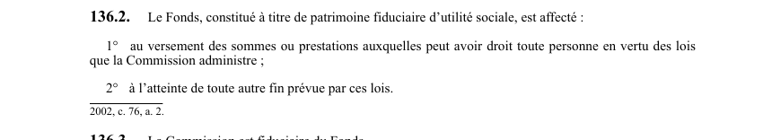

art-136.2-LSST : affectation Fonds CSST
Un article du wiki ⚖️ Recueil législatif
En bref
Le Fonds, constitué à titre de patrimoine fiduciaire d'utilité sociale. Il s'agit d'une obligation.
- Constitué à titre de patrimoine fiduciaire d'utilité sociale.
🌐 LegisQuébec · 📄 PDF officiel (page 37)
Texte officiel : capture du PDF

Toucher l'image pour l'agrandir🔗 Ouvrir a cette page : LSST.pdf : page 37 · texte a jour au 26 mars 2024
Voir aussi
- art. 136 : préavis cessation services santé · obligation : l'employeur qui n'entend pas présenter de demande de reconnaissance doit en aviser le ministre dans les 90 jours; s'il cesse ultérieurement de maintenir les services reconnus, il doit donner un préavis de quatre mois, après quoi le personnel est intégré selon les articles 134.
- art. 136.1 : transfert sommes Fonds CSST · la Commission transfère au Fonds de la santé et de la sécurité du travail les sommes en sa possession le 31 décembre 2002, y compris ses valeurs mobilières à la Caisse de dépôt et placement du Québec, sauf les sommes détenues en dépôt.
- art. 136.3 : Commission fiduciaire du Fonds · la Commission est fiduciaire du Fonds; elle est réputée avoir accepté sa charge et les obligations s'y rattachant à compter du 1er janvier 2003 et agit dans le meilleur intérêt du but poursuivi par le Fonds.
- art. 136.4 : Code civil applicable au Fonds · champ d'application : les articles 1260 à 1262, 1264 à 1266, 1270, 1274, 1278, 1280, 1293, 1299, 1306 à 1308, 1313 et 1316 du Code civil sont les seules dispositions des Titres sixième et septième du Livre quatrième qui s'appliquent au Fonds et à la Commission en sa qualité de fiduciaire.
- ↑ Loi : LSST
Pages qui pointent ici (4)
- art-136-LSST : préavis cessation services santé Recueil législatif
- art-136.1-LSST : transfert sommes Fonds CSST Recueil législatif
- art-136.3-LSST : Commission fiduciaire du Fonds Recueil législatif
- art-136.4-LSST : Code civil applicable au Fonds Recueil législatif